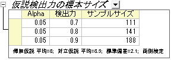

社会学者が、アメリカにおける乳児の平均死亡率が8であるかどうか調べるものとします。実験計画では、死亡率の差は 0.5より大きく変化しません。また、予備実験から、標準偏差は2.1になるはずである、という事が分かっています。
質問：
検出力の値が0.7, 0.8, 0.9に対して、信頼水準95%(
 =0.05)で乳児の平均死亡率を推定するのに必要なサンプルサイズはいくつでしょうか?
=0.05)で乳児の平均死亡率を推定するのに必要なサンプルサイズはいくつでしょうか?
Originでの操作：
検出力と標本サイズの分析は実験計画をたてる際に重要になります。不十分なデータは検出力が足りなくなり、帰無仮説を棄却する能力を失う恐れがあり、データを余分に集めてしまうのは時間と資源を無駄にしてしまうことに繋がります。つまり、実験を行う前に適切な標本サイズを割り出すことが非常に大切になってきます。実験の検出力はある特定標本サイズを元にすれば計算でき、また、特定の検出力で検定できる標本サイズも計算できます。
このチュートリアルは標本サイズの計算方法、または検出力を推定する方法を、実際に使用するデータを元に紹介します。
背景：
社会学者が、アメリカにおける乳児の平均死亡率が8であるかどうか調べるものとします。実験計画では、死亡率の差は 0.5より大きく変化しません。また、予備実験から、標準偏差は2.1になるはずである、という事が分かっています。
質問：
検出力の値が0.7, 0.8, 0.9に対して、信頼水準95%(=0.05)で乳児の平均死亡率を推定するのに必要なサンプルサイズはいくつでしょうか?
Originでの操作：
Originの出力：
結果シートが作成され、指定された仮説の検出力に必要な標本サイズを表示します。

結果の解釈：
この結果によると、実験を計画する際に検出力0.7にするには111、0.8にするには141、0.9にするには188のサンプルを集める必要がある事が、計算により分かりました。
背景：
ある診療所では、2つの保険制度Healthwise と Medcareに加入しています。この2つの保険に対して、請求してから補償給付までの平均時間(日数)を比較するものとします。経験上、Healthwiseでは、平均32日で標準偏差7.5日であることが分かっています。また、Medcareは、補償給付までの平均時間は42日で、標準偏差は3.5日です。
質問：
それぞれの保険に対して行われた10個の請求を抜き出し、補償までの平均時間を記録します。2つの保険における平均時間の差が5%以上になるための検出力はいくつでしょうか?
Originでの操作：
^{*}7.5^{\land} 2+(5-1)^{*}3.5^{\land }2)/(5+5-2)}=5.85235")
Originの出力：
結果が出力され、検出力が計算されました。
結果の解釈：
それぞれに対して10個の請求を集めれば、その診療所は0.95054:1、または95%の可能性で差を検出できると結論付けることができます。帰無仮説を棄却できず、2つの平均は同じである(異なっていない）と誤って結論付ける危険性は、4.946%(1-0.95054)あります。
背景：
同種の2台の機械を使用し、薄いフィルムの中のアモルファスシリコンの厚みを測定しています。これら2台の機械の計測結果に差があるかどうか調べるため、エンジニアが2台の計測結果を比較する計画を立てました。
以前行われたアモルファスシリコンの実験から、差の標準偏差は2µmであるとわかっています。さらに、これら2台の機械の差は0.5µmを超えてはならず、1番目の機械で計測した平均の厚みは5000µmです。
質問：
検出力の値が0.8, 0.9, 0.95に対して信頼水準99%で結果が必要なとき、いくつの標本をとる必要があるでしょうか?
Originでの操作：
上記情報から、1番目のグループの平均は5000 µm、 2番目のグループは5000.5 µmとなっています。
Originの出力：
結果シートが作成され、指定された仮説の検出力に必要なサンプルサイズが出力されます。
結果の解釈：
191個のサンプルを計測した場合、エンジニアは80%の確率で差を確認できるといえます。同じように242個のサンプルでは90%、289個のサンプルを使用すれば95%の確率で、2台の機械の計測に差がある場合は計測できます。
背景：
異なる植物で窒素含有量が異なるか、調べるものとします。4種類の植物に対して窒素含有量をミリグラム単位で記録する実験計画があります (各々の種類に対して80個の標本を観測します)。先行研究は、MSE（平均二乗誤差）の平方根は60で、平均のCSS（補正平方和）は400であると提示しています。
質問：
この計画は適切でしょうか? （つまり、計算した検出力は妥当でしょうか？）
Originでの操作：
Originの出力：
結果シートが作成され、検出力が現在の状況から算出されます。
結果の解釈：
どうやら、元の実験計画はあまりよくないようです。各グループから差を検出する可能性は、この計画だと69%しかありません。より説得力のある結果を得るために、研究者は植物の種ごとにさらに多くの標本を集めるべきでしょう。